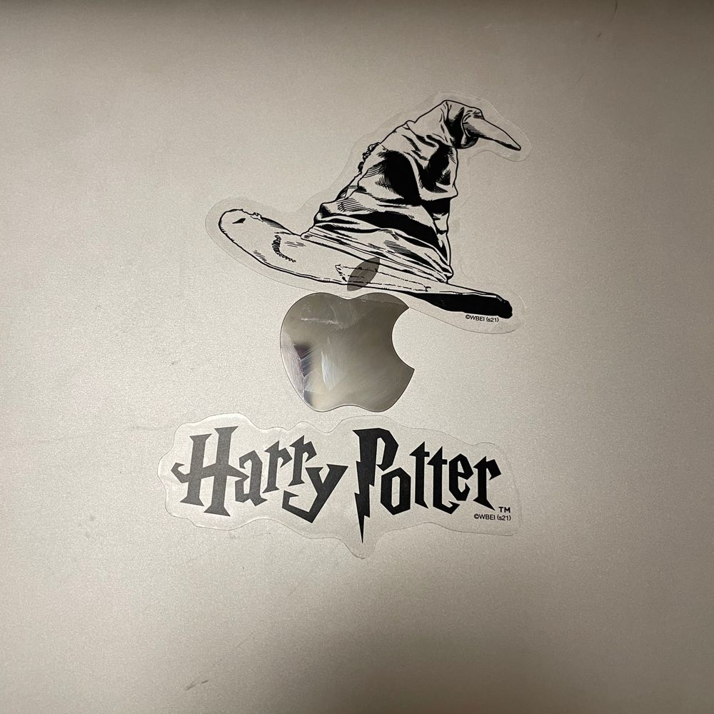

내 노트북은 그리핀도르!!!!!
로 내가 정함 ㅎㅎ
근데 대박 신기한게 해리포터가 얼굴에 흉터가 있자나여 번개모양⚡️ 근데 저도 얼굴에 흉터가 있거든영
딱 위치도 이마 쪽에?
그게 침대에서 자다가 떨어지면서 서랍장에 찍히구
그 다음에는 학교 끝나고 저 데릴러온 엄마가 너무 반가워서 뛰다가 같은 곳에 또 상처가 나서
흉터가 좀 짙어진 거로 기억하거든여
그래서 해리포터 볼 때 마다 왠지 모르게 그 셋 친구들 중에 해리포터에게 자꾸 눈이 갔어여
근데 그건 사실 주인공이기 때문일지도
ㅋㅋㅋㅋㅋㅋㅋㅋㅋㅋㅋㅋㅋㅋㅋ
그리고 어제 내가 읽는다고 한 책 너무 좋다...
마음이 뭔가 되게 몽글몽글...?해지는 귀여운 책인듯
이런 책 더 추천해주면 안될까여?? ㅎㅎ